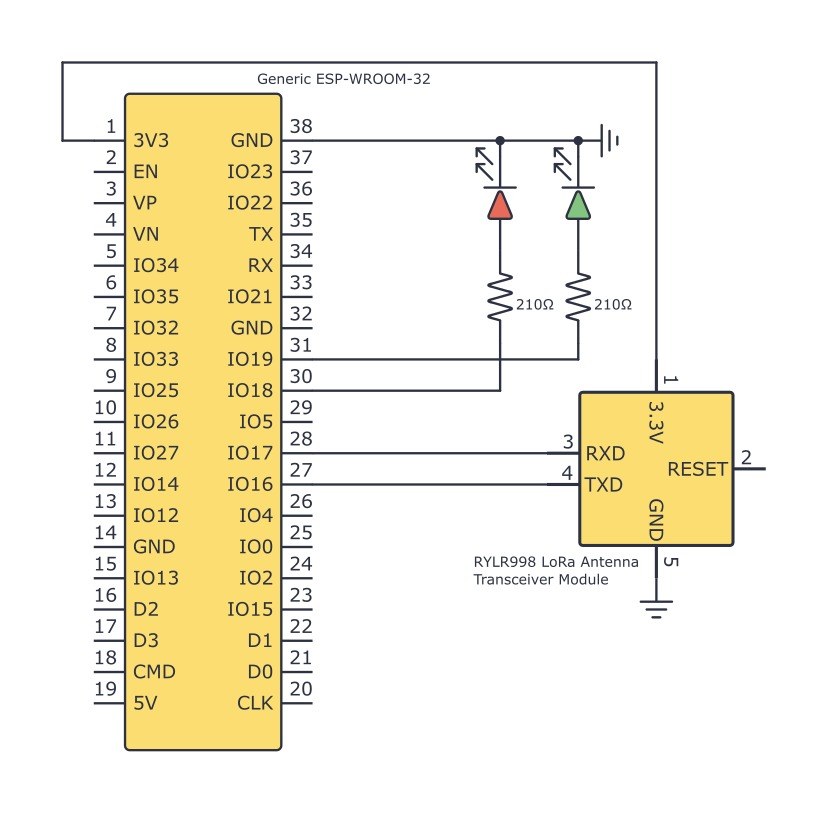
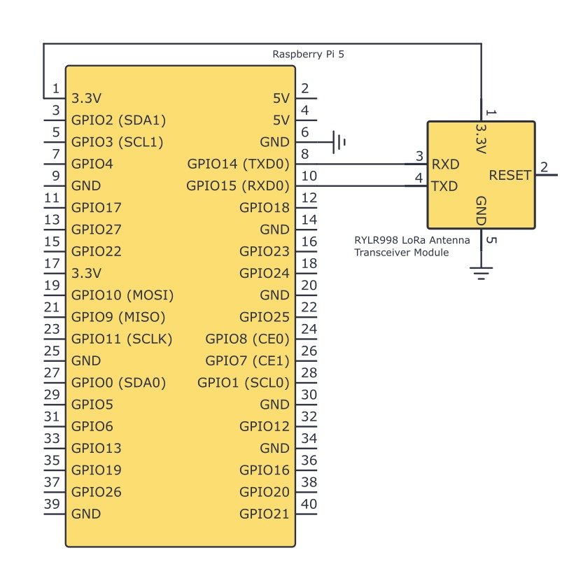
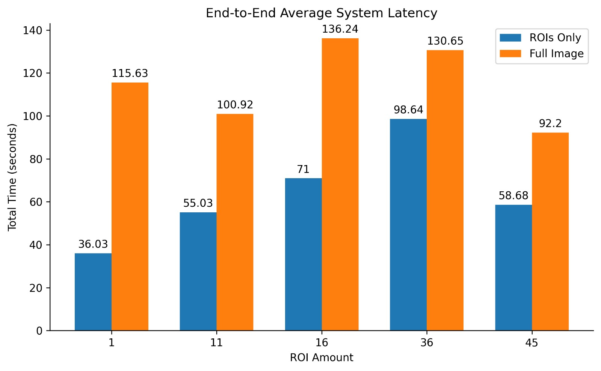
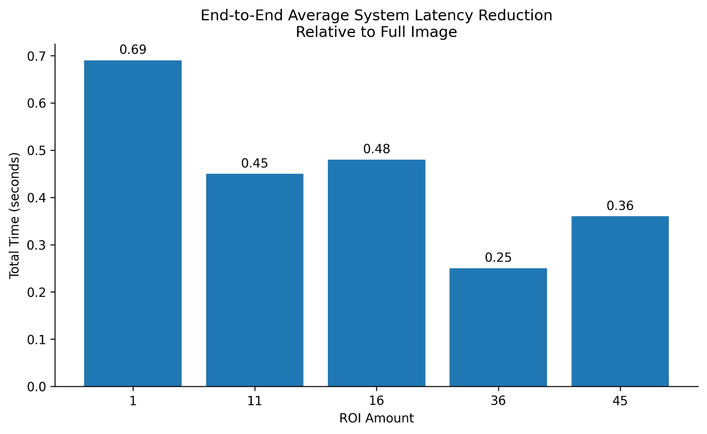

About the Project
LoRaVSN is a modular image transmission framework designed to extend computer vision capabilities to environments where Wi-Fi or high-bandwidth Internet access is limited, unreliable, or unavailable. It uses LoRa, a low-power and long-range communication technology, to transmit reduced image data from resource-constrained edge devices to a centralized gateway.
Engineering Constraints & Standards
Memory Management
Strict optimization to operate within the 520 KB of internal SRAM of the ESP32-WROOM-32 microcontroller. The entire transmitter pipeline operates on caller-provided buffers with no dynamic heap allocation in critical paths to prevent fragmentation and out-of-memory failures.
Bandwidth Limitations
Mitigation of severe bandwidth restrictions inherent to LoRa radio frequencies through aggressive data reduction before transmission, utilizing region-of-interest masking and compression techniques.
System Architecture
The LoRaVSN architecture is organized around two device types, the Remote Node and the Gateway, connected over a LoRa link. The framework is divided into layers based on the function each performs within the image transmission pipeline:
- Sensing Layer: Gathers data through sensors and forwards it to the Coding Layer.
- Coding Layer (Remote Node): Contains the logic for compressing and reducing data before transmission.
- LoRa Communication Layer: Present in both the Gateway and Remote Nodes; it allows long-range and low-power communication using a custom LoRa messaging protocol.
- Decoding Layer (Gateway): Decompresses and reassembles the fragmented data packets received from the Coding Layer.
- Edge Processing Layer (Gateway): Runs computer vision models on the images, manages network connectivity, and handles commands.
- Application & Management Layers: Interfaces provided to users and system administrators to access processed data and configure settings over the network.
Logical Data Flow

System Overview Diagram: Logical flow from the Sensing Layer to the Application Layer.
System Hardware Setup
Hardware implementation used for the physical validation of the coding and communication layers:

Remote Node (ESP32 + RYLR998)

Gateway Receiver (Raspberry Pi 5)

Circuit Diagram: Remote Node

Circuit Diagram: Gateway
Performance Verification
Performance metrics gathered during transmission tests, evaluating image size reduction and end-to-end system latency:

JPEG Compressed Image Average Size Reduction for Different Amounts of ROIs.

JPEG Compressed Image Average Size Reduction Relative to Full Image Frame.

End-to-End Average System Latency for Different Amounts of ROIs.

End-to-End Average System Latency Relative to Full Image Frame.
Our Team
Alexander A. Angueira Bretón
Embedded Systems & Hardware Integration
Lead for ESP32 firmware development and protocol design.
Pedro J. Gracia Ramos
Data Compression & CLI Development
Lead of LoRa system and ML workflows.
Alexa M. Zaragoza Torres
Frontend Delivery & System Validation
Lead of compression systems, system validation, and technical documentation management.